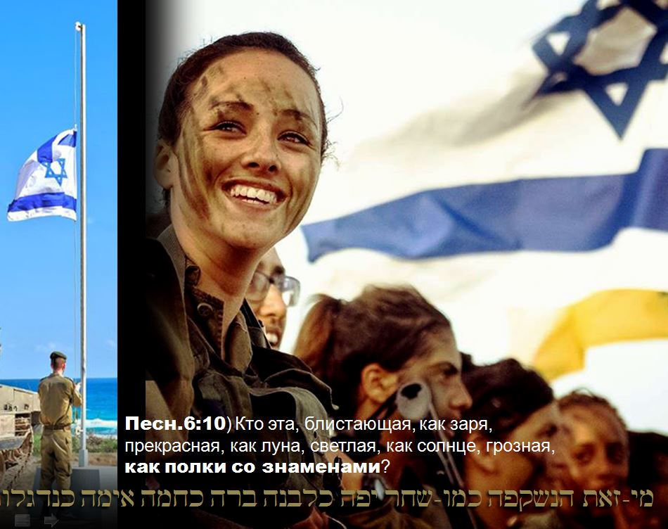
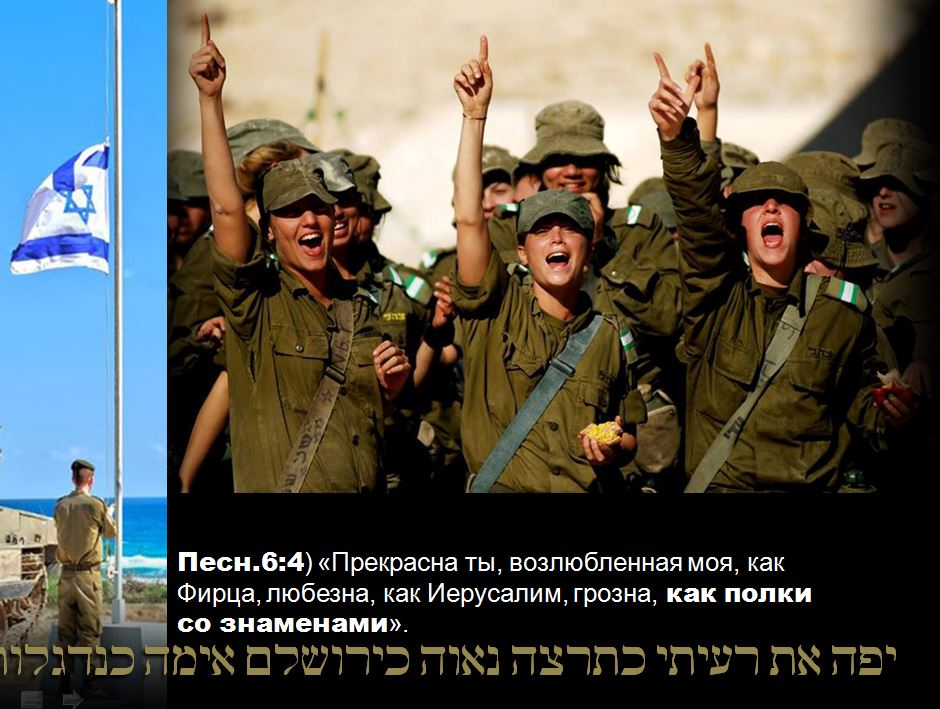
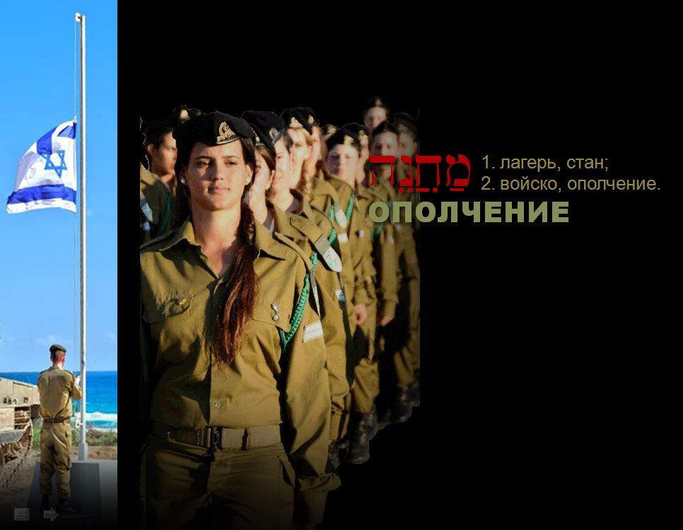
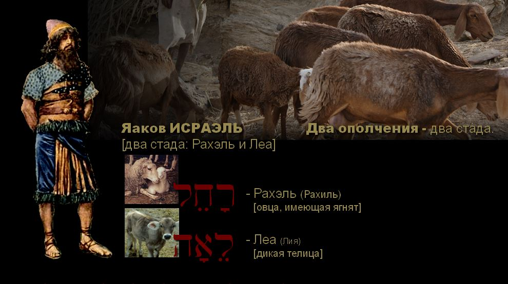

ШУЛАМИТ. Танец двух ополчений. /Песнь Песней. 7:1/
"ШУЛАМИТ. Танец двух ополчений" - эта тема о двух ветвях одного дерева, о двух сестрах, дочерях одного Отца, о двух общинах, составляющих народ Божий - об Израиле и Церкви. Особенное, таинственное преломление темы отношений между сестрами раскрывается перед нами в 7 главе Песни Песней.
ШУЛАМИТ. Танец двух ополчений. /Песнь Песней. 7:1/
Откровение сокрытое под спудом наслоений переводов.
Только в оригинальном древнееврейском тексте начинают раскрываться глубины замыслов Всевышнего через зашифрованное в значениях имен и слов в Песне Песней.




Если вас заинтересовала эта тема, советую обратиться также к смежному ей арт-мидрашу "Две МАСЛИНЫ. Две АЛЛЕГОРИИ" /Израиль и Церковь. 2013/.
автор: Эфраим Калиш /TORAART/